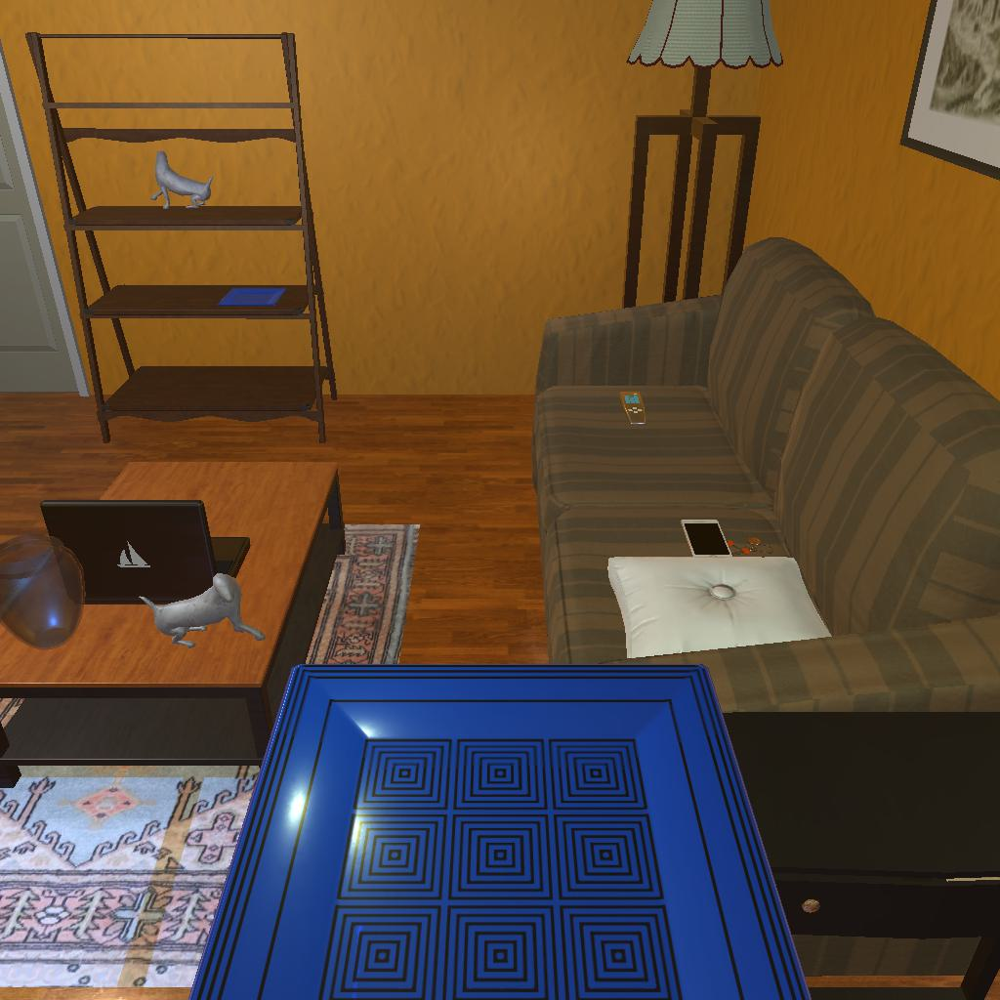

---------------------------------------------------------task: 3---------------------------------------------------------
--------------------------------------------------------------------------------------------------------------------------------------------------------------------
--------------------------------------------------------------------------------------------------------------------------------------------------------------------
Step:--------------------------------------------------------------------------19-------------------------------------------------------------------------------
----------------------------------------
VLM Prompt:
Image1:
**Instruction**
1. Analyze the provided image to identify all visible household objects, focusing on those relevant to the task description "look at plate under the floorlamp."
2. Use the analysis of the image and the task hint "The agent must find an object of the desired type, locate and turn on a light source with the desired object in-hand." to answer the question: what is the most reasonable action in the choices for the task description "look at plate under the floorlamp"?
4. Decide and write the answer using the template: The answer is: (i): , where i is the real number. If there is no desired object in the image, search every place based on **Initial Observation** to find the object. And if no one is exactly correct, choose a similar answer.
**Initial Observation**
You are in the middle of a room. Looking quickly around you, you can see armchair (1), garbagecan (1), tvstand (1), shelf (1-5), sofa (1), coffeetable (1), sidetable (1-2), drawer (1)
**Answer Choices**
(1): go to armchair 1
(2): go to garbagecan 1
(3): go to tvstand 1
(4): go to shelf 1
(5): go to shelf 2
(6): go to sofa 1
(7): go to sidetable 2
(8): go to drawer 1
(9): go to shelf 3
(10): go to shelf 4
(11): go to shelf 5
(12): put plate 1 in/on sidetable 1
(13): use floorlamp 1
(14): examine plate 1
**Answer**
Let's think step by step by following the instructions.
----------------------------------------
----------------------------------------
Original Response:
First, we need to identify the household objects relevant to the task description "look at plate under the floorlamp." The image shows a floorlamp next to the sofa, but no plate is visible under the floorlamp in the image provided. However, based on the initial observation, there is a shelf (1-5) that might contain the plate we are looking for.
Next, we will use the analysis and the task hint to determine the most reasonable action for the task description. The hint suggests that the agent must find an object of the desired type (a plate) and then locate and turn on a light source (the floorlamp) with the desired object in-hand.
Considering the initial observation that there is a shelf that may contain the desired object, the most logical action would be to go to the shelf and find the plate.
Since the image does not show the plate, we should search every place based on the initial observation to find the object. The shelves are the most likely place where the plate could be.
Therefore, the answer is: (4): go to shelf 1. If the plate is not there, the agent can continue to check other shelves (5, 9, 10, 11) until the plate is found. Then, they can turn on the floorlamp (13) to complete the task.
----------------------------------------
----------------------------------------
>>> Refine Original VLM Response and Get Pure Action: No action
----------------------------------------
-----------------------------------------------------------------
Running time: 13.8115394115448 seconds
Total Money: 0.9883999999999998
-----------------------------------------------------------------
-----------------------------------------------------------------
Text Observation:Nothing happens.
-----------------------------------------------------------------
UNSUCCEED